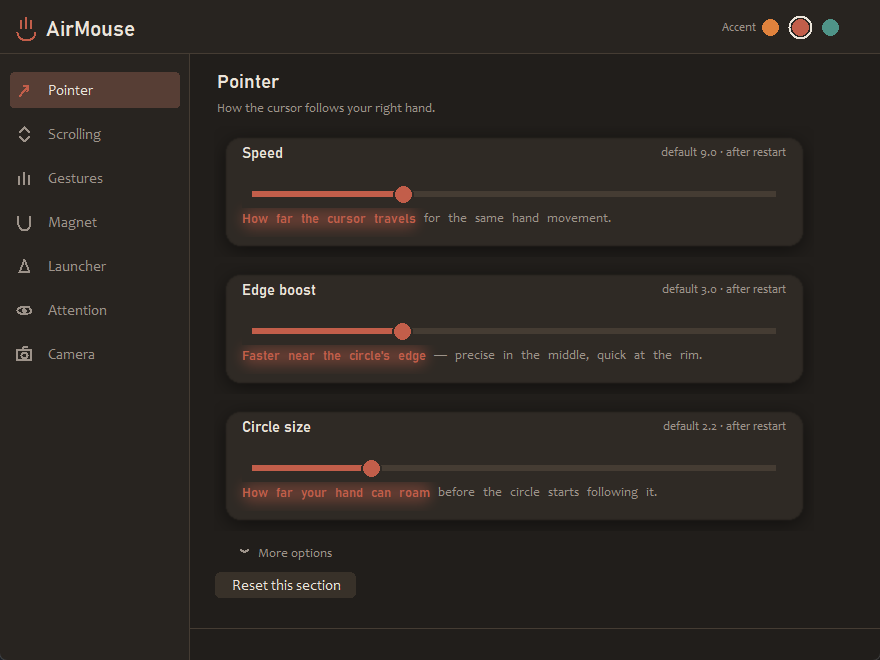

Projects
Self-taught developer in North Port, Florida. Two years of physics and computer science coursework at Penn State, currently a cable technician at Comcast. I learn by building things, then rebuilding them once I understand what I got wrong the first time.
Built

A webcam watches your hands at 30 fps. One hand moves the pointer,
clicks, scrolls and sets the volume; the other is a four-slot app
launcher. A face model runs alongside to check you're facing the screen,
so the cursor stops when you turn away. Python, MediaPipe, OpenCV, and
the Win32 SendInput API through ctypes.
In progress
RoomMatch
A web app for matching roommates and apartments — profile-based compatibility scoring on sleep schedule, habits and budget, with filtered listing search. Still being built; nothing worth linking yet.